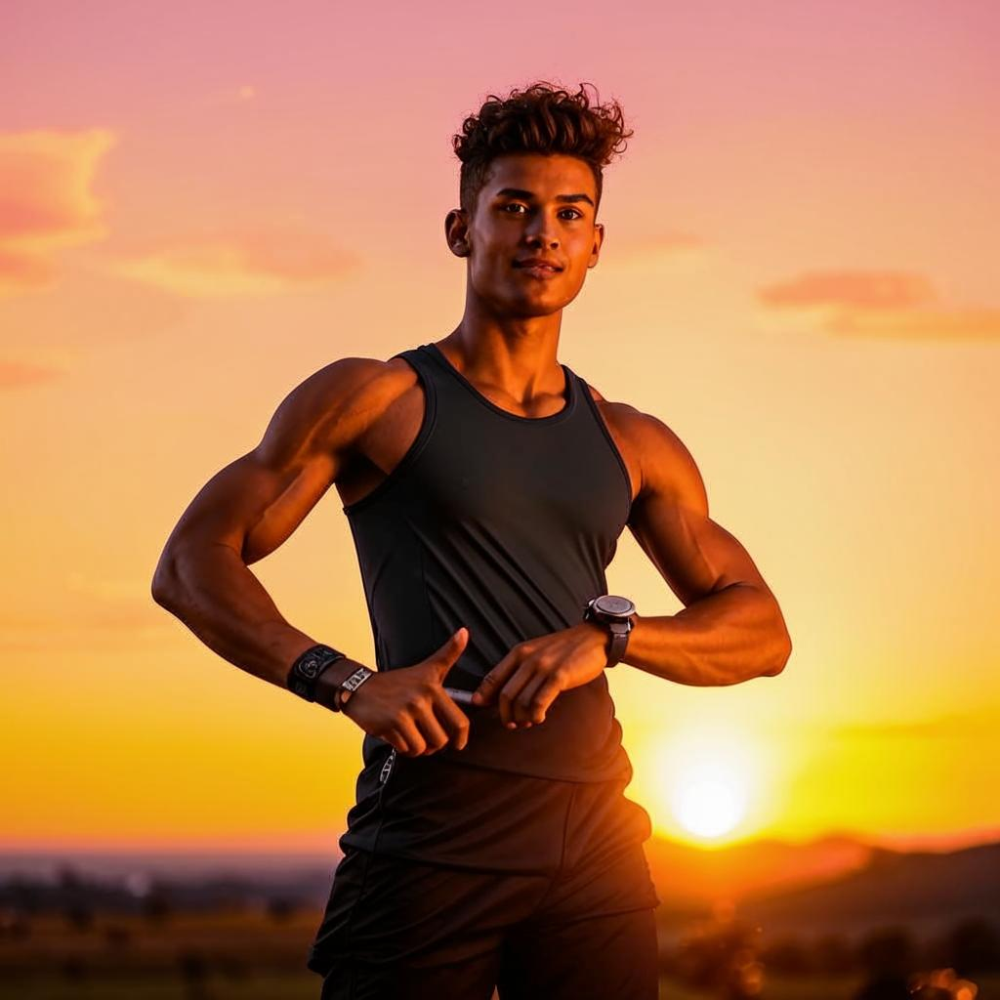

5 основ ЗОЖ

Вода
Норма: 1,5–2 литра в день. Начинайте утро со стакана воды. Напоминания: ставьте бутылку на рабочий стол или используйте приложение.

Сон
Фазы сна: поверхностный и глубокий сон чередуются 4–6 раз за ночь. Ложитесь спать до 23:00.

Питание
Баланс БЖУ: белки (мясо, рыба, яйца), жиры (орехи, масла), углеводы (крупы, овощи) в каждом приёме пищи.

Движение
Минимальная активность: 5000–8000 шагов в день для начинающих. Больше ходьбы — больше энергии!

Управление стрессом
Микропаузы: останавливайтесь на 1–2 минуты каждый час. Посмотрите в окно, потянитесь, выпейте воды.
Маленькие шаги = большие изменения
Начните с одного правила. Через 21 день оно станет привычкой. Ваше здоровье в ваших руках!